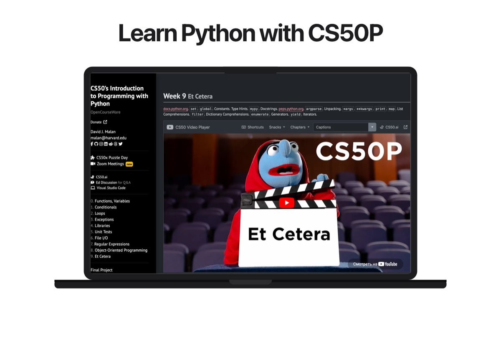

Web development
Nuxt, Vue, JavaScript, responsive layouts, and API-connected product views.
About
I’m Alimzhan, a frontend developer and product builder from Kazakhstan. I enjoy turning complex, multi-role systems into interfaces that feel direct, responsive, and understandable.
My focus
Nuxt, Vue, JavaScript, responsive layouts, and API-connected product views.
Hierarchy, interaction states, accessibility, content structure, and visual systems.
Flutter, Dart, Swift, and shared product logic across clients.
FastAPI, PostgreSQL, authentication, role logic, and backend-aware frontend decisions.
My approach
I start with the job, the decision, and the context—not a component inventory. The main action should be obvious before the interface becomes expressive.
Hierarchy, motion, and feedback each need a reason. Repeated patterns should reduce learning, not make every page feel identical.
A working product exposes real edge cases. I test narrow screens, keyboard paths, slow states, and reduced motion, then iterate.
Experience & education
Product work, university study, competitions, and deliberate learning have all pushed the same direction: stronger frontend craft.
Responsive composition, accessible interaction, component systems, and motion that supports comprehension.
Worked across the Nuxt interface, Flutter client, and FastAPI integration to connect role-based classroom workflows.
Built and presented working products to faculty, panels, and hackathon judges, including finalist results for RugPull and Digital Urpaq.
Completed the course and its problem sets, strengthening program structure, testing, data handling, and problem solving.
Full-time university study alongside independent product development, coursework, technical workshops, and competitions.
Short build cycles taught me to reduce scope, make decisions with incomplete information, and demonstrate a working flow clearly.
Beyond the interface
I only include interests and milestones that are visible in the work: structured learning, hackathon building, and presenting technical ideas to other people.



Next conversation
If that is the kind of frontend work you care about too, I’d like to hear about it.
Get in touch ↗